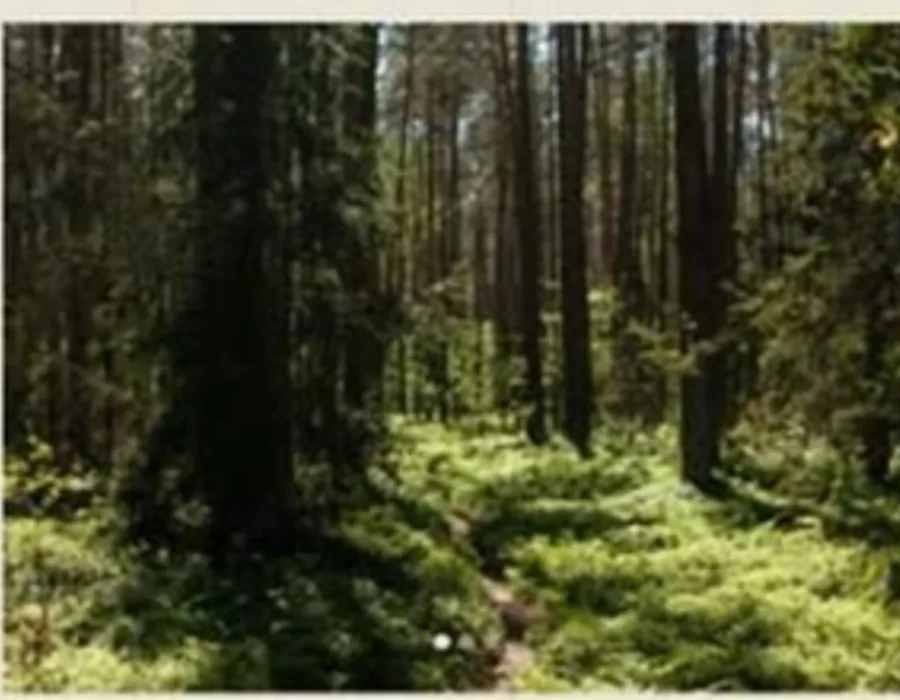
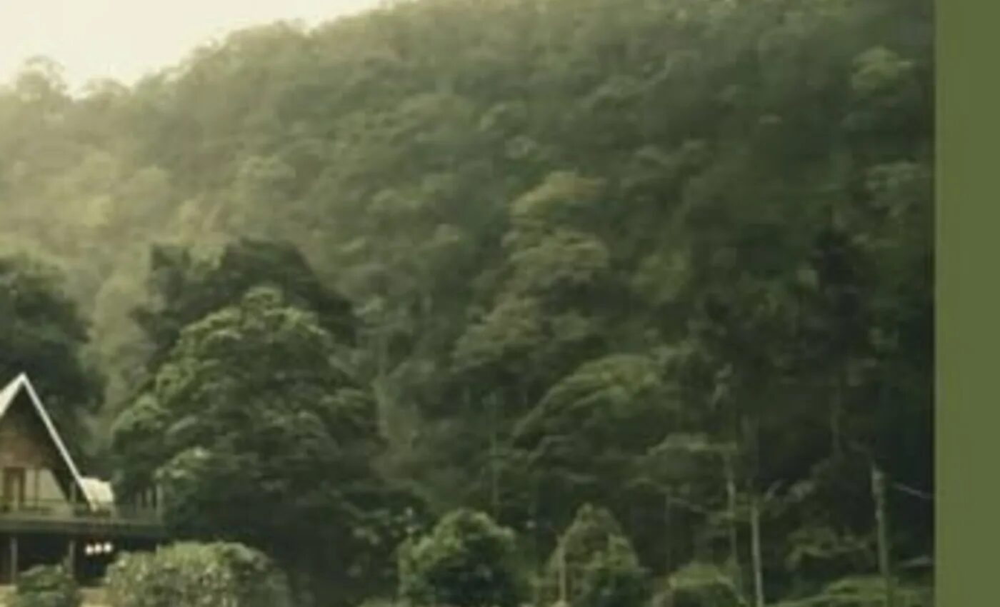
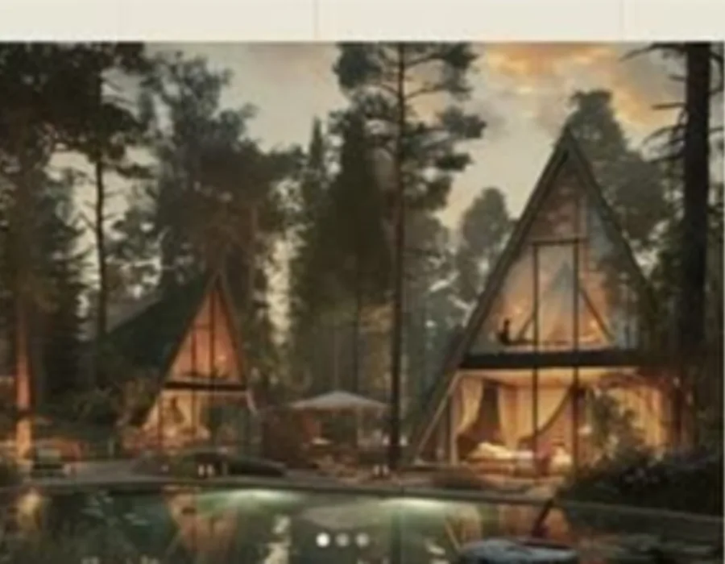
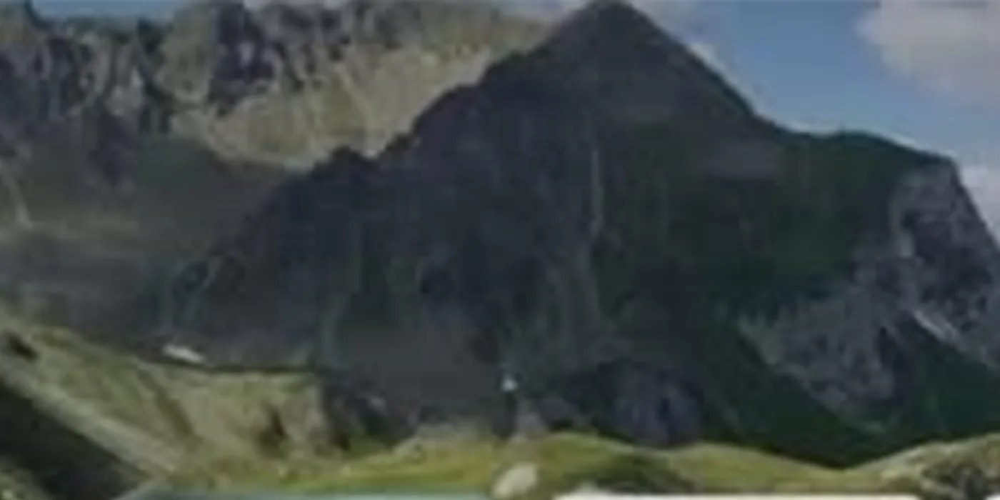

Ponto parceiro · Natureza & experiência
Refúgio
da Serra
Uma pausa entre mata, arquitetura e sabores locais. Use esta página como base para conhecer o lugar e encaixá-lo no seu roteiro.
Experiência parceira
Natureza, pausa
e uma boa história.
Um template pensado para apresentar o que torna cada ponto especial sem transformar a página em catálogo. A hierarquia prioriza atmosfera, proposta e informações úteis.
Conhecer a experiência ↓◌◉◇⌂

Sabores
Um intervalo para sentar sem pressa.

Por que incluir
Uma experiência que não pede correria.
O lugar funciona bem como pausa entre atividades mais urbanas ou como destino principal de uma manhã. A página informa duração, perfil e contexto para facilitar a decisão.
Informações práticas ↗Ritmo flexível
Chegue dentro da janela e adapte o tempo de permanência.
Boa combinação
Funciona antes de almoço, café ou pôr do sol.

confortopausacontemplação
Chegar, desacelerar e deixar o lugar fazer o resto.
Ambientes de permanência, pequenas descobertas e tempo livre para explorar sem sequência rígida.

naturezacaminhadafotografia
Um pedaço de verde que muda o ritmo do roteiro.
Quando o dia pede ar livre, esse bloco mostra como a experiência se encaixa no tempo e no deslocamento.
O que você encontra aqui
Escolha o jeito de viver a experiência.
As opções abaixo demonstram como benefícios e modalidades podem ser organizados sem poluir a página.
mais escolhida
Visita livre, no seu próprio tempo.
Uma janela confortável para explorar e seguir viagem sem compromisso com horário de saída.
- Duração sugerida: 1h30
- Reserva: recomendada em fins de semana
- Perfil: casal, família, solo
O lugar em uma frase
Leitura editorial do Passaporte“Uma boa parada não ocupa um espaço no dia. Ela muda o jeito como o resto do dia acontece.”↘
O que combina com este ponto
Complete o dia por proximidade.
Esses cards simulam conexões com outros interesses, parceiros e próximos passos.

Informações práticas
Antes de ir
- Funcionamento
- Qua a dom · 09h às 18h
- Tempo sugerido
- 1h30 a 3h
- Distância
- 25 min do centro
- Reserva
- Recomendada

Adicionar ao passaporte
Quer encaixar este ponto no seu próximo dia em Serra Negra?
Salve a experiência ou use-a como ponto de partida para um roteiro demonstrativo.